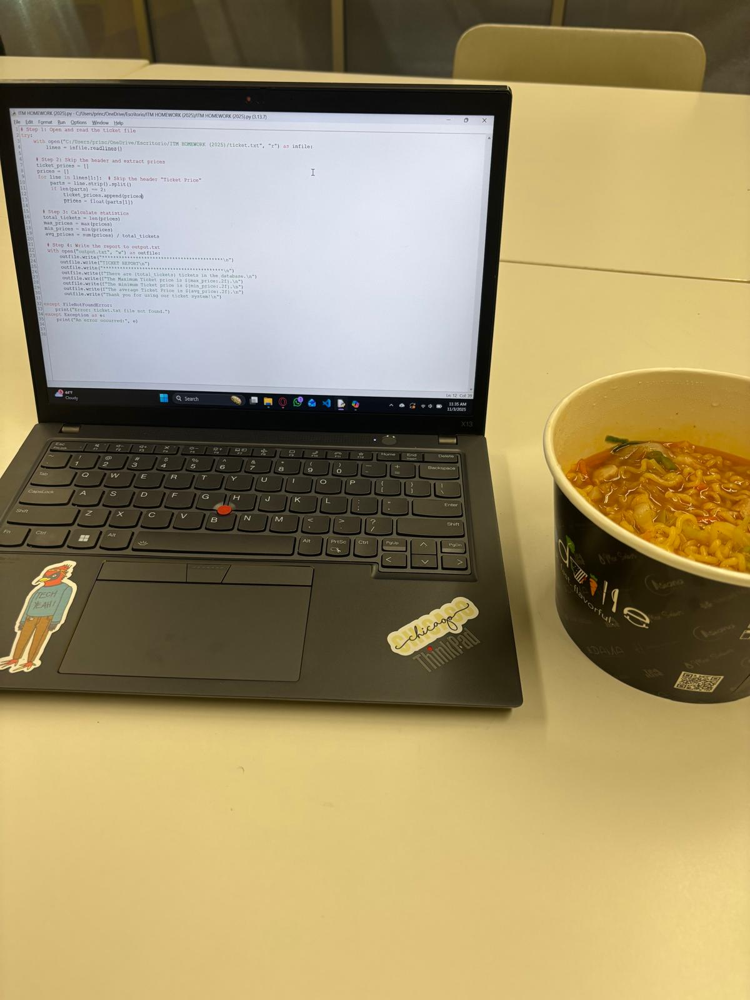
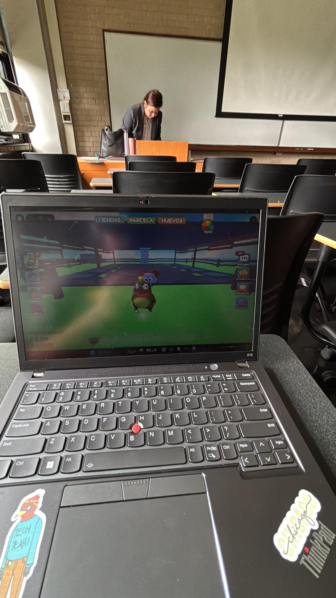
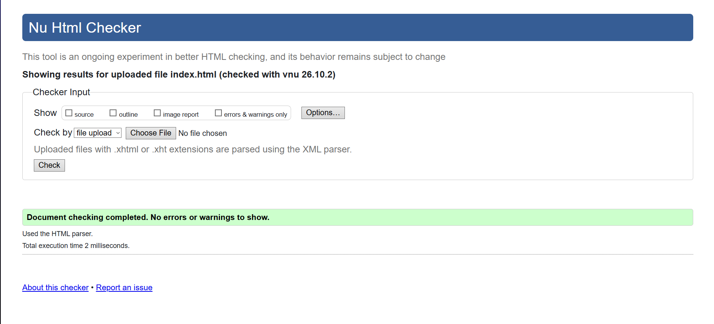

This is Project 1 for ITMD‑361. It contains three HTML pages written entirely without CSS, layout styling, or formatting tags. Each page includes navigation links, images, and additional content to create a full desktop scroll of information.
Below are three images included for the project. These images use relative paths and follow the directory‑based structure required for this assignment.


The image below shows the W3C validation results for this page.
